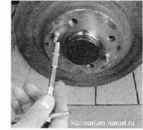
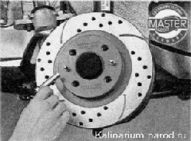

Тормозной диск - снятие и установкаСнятие Тормозные диски заменяются парами, обязательно в обоих тормозных механизмах передних колес. Минимальная толщина тормозного диска -17,8мм. 1. Снимаем суппорте тормозного диска, не отсоединяя от него тормозного шланга. 2. Чтобы не повредить тормозной шланг, подвязываем суппорт проволокой к пружине стойки. 3. Металлической щеткой очищаем от грязи и ржавчины цилиндрическую посадочную поверхность тормозного диска на ступице, и обрабатываем это место проникающей смазкой. 4. Ключом на 7 мм отворачиваем направляющие штифты колеса, удерживая рукой диск от проворачивания.  5. Снимаем тормозной диск со ступицы. Если тормозной диск не удается снять, то обстукиваем диск молотком по плоскости прилегания колеса. Удары молотком по рабочей поверхности диска не допускаются! Установка 1. Очищаем от грязи и ржавчины посадочное место диска на ступице, покрываем его пластичной смазкой. 2. Далее устанавливаем все снятые детали в последовательности, обратной снятию. 3. Обезжириваем рабочие поверхности диска ветошью, смоченной растворителем.  |